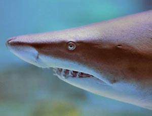
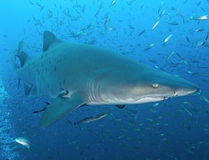

Der Sandtigerhai (Sandtiger shark) ist groß, mit flacher, zugespitzter Schnauze. Die Augen sind relativ klein und ohne Nickhaut. Beide Rückenflossen von gleicher Größe, wobei die erste Flosse nach hinten verschoben ist (Ansatz hinter dem freien Ende der Brustflossen). Hellbraun, Bronzefarben auf dem Rücken, weißlich auf der Bauchseite. Oftmals dunkelrote Punkte. Häufige Art der küstennahen Regionen, oft in flachen Regionen, doch kann diese Art auch bis in 190m Tiefe gefunden werden. Langsam schwimmend, kann einzeln, in kleinen oder großen Gruppen auftreten. Sie schlucken Luft, um ihren Auftrieb zu erhöhen bzw. zu erleichtern. Können auch regungslos am Boden liegen. Vorwiegend nachtaktiv. Zur Nahrung der Sandtigerhaie gehören Fische verschiedenster Arten, Rochen, Krabben aber auch kleine Haie. Maximale Größe liegt bei 320cm. Für den Menschen nicht gefährlich, doch beißen sie, wenn sie belästigt werden.
 15.11.2011